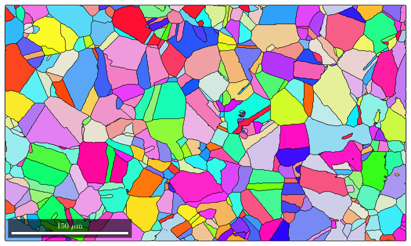
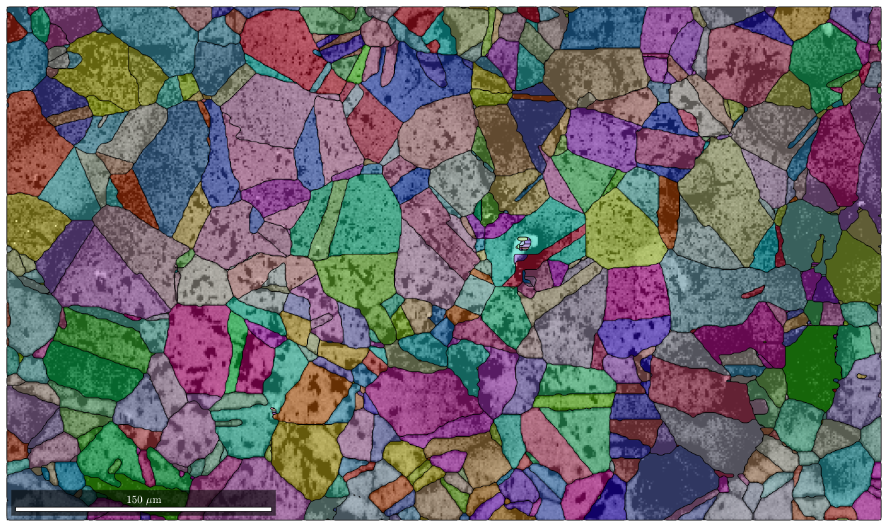
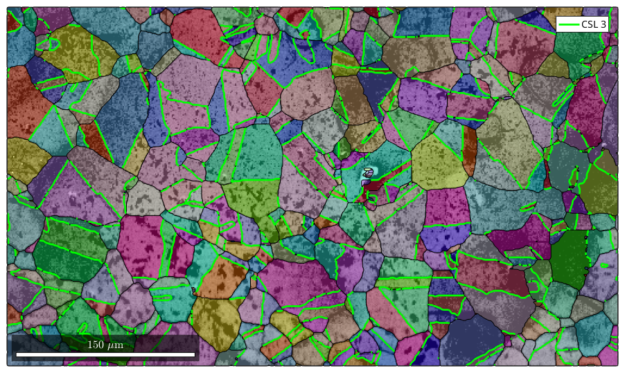
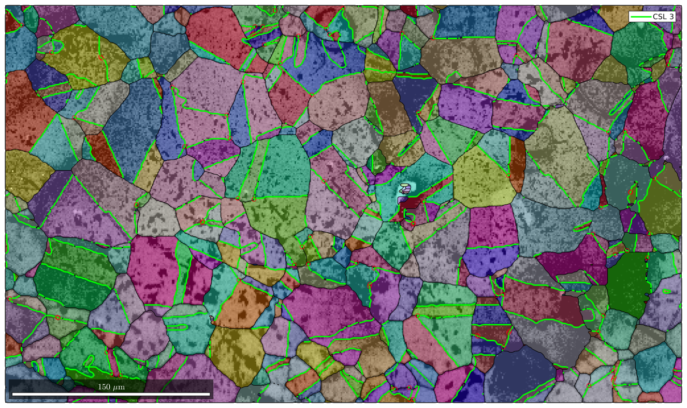
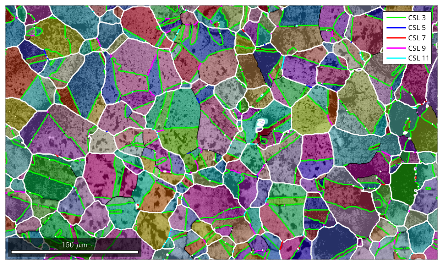
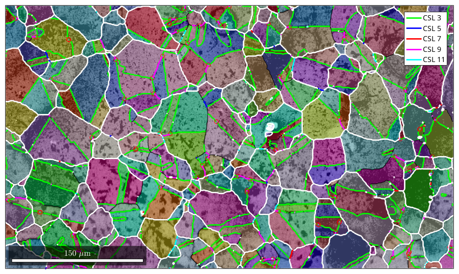

Explains how to analyze CSL grain boundaries
| On this page ... |
| Data import and grain detection |
Lets import some iron data and segment grains within the data set.
CS = crystalSymmetry('cubic','mineral','iron') ebsd = loadEBSD(fullfile(mtexDataPath,'EBSD','CNR.txt'),CS,... 'interface','generic',... 'ColumnNames',{'phase','x','y','phi1','Phi','phi2','IQ','CI','error'}) % grain segementation [grains,ebsd.grainId] = calcGrains(ebsd('indexed')) % grain smoothing grains = smooth(grains,2) % plot the result plot(grains,grains.meanOrientation)
CS = crystalSymmetry
mineral : iron
symmetry: m-3m
a, b, c : 1, 1, 1
Warning: Some Euler angles appears to be
quite large. Maybe you forgot '* degree'
to switch from degree to radians.
ebsd = EBSD
Phase Orientations Mineral Color Symmetry Crystal reference frame
1 196608 (100%) iron light blue m-3m
Properties: ci, error, iq, x, y
Scan unit : um
grains = grain2d
Phase Grains Mineral Symmetry Crystal reference frame Phase
1 1181 iron m-3m
Properties: GOS, meanRotation
ebsd = EBSD
Phase Orientations Mineral Color Symmetry Crystal reference frame
1 196608 (100%) iron light blue m-3m
Properties: ci, error, iq, x, y, grainId
Scan unit : um
grains = grain2d
Phase Grains Mineral Symmetry Crystal reference frame Phase
1 1181 iron m-3m
Properties: GOS, meanRotation
Hint: You might want to use the point group
"432" for colorcoding!
I'm going to colorize the orientation data with the
standard MTEX colorkey. To view the colorkey do:
oM = ipdfHSVOrientationMapping(ori_variable_name)
plot(oM)
 plot(ebsd,ebsd.prop.iq,'figSize','large') mtexColorMap black2white
gB = grains.boundary('iron','iron') hold on plot(grains.boundary) hold off
gB = grainBoundary
Segments mineral 1 mineral 2
26565 iron iron
 hold on gB3 = gB(angle(gB.misorientation,CSL(3))<3*degree); plot(gB3,'lineColor','b','linewidth',2,'DisplayName','CSL 3') hold off
[mergedGrains,parentIds] = merge(grains,gB3); hold on plot(mergedGrains.boundary,'linecolor','g','linewidth',2)
delta = 5*degree; gB3 = gB(gB.isTwinning(CSL(3),delta)) gB5 = gB(gB.isTwinning(CSL(5),delta)) gB7 = gB(gB.isTwinning(CSL(7),delta)) gB9 = gB(gB.isTwinning(CSL(9),delta)) gB11 = gB(gB.isTwinning(CSL(11),delta))
gB3 = grainBoundary
Segments mineral 1 mineral 2
12672 iron iron
gB5 = grainBoundary
Segments mineral 1 mineral 2
59 iron iron
gB7 = grainBoundary
Segments mineral 1 mineral 2
102 iron iron
gB9 = grainBoundary
Segments mineral 1 mineral 2
692 iron iron
gB11 = grainBoundary
Segments mineral 1 mineral 2
261 iron iron
hold on plot(gB3,'lineColor','g','linewidth',2,'DisplayName','CSL 3') hold on plot(gB5,'lineColor','b','linewidth',2,'DisplayName','CSL 5') hold on plot(gB7,'lineColor','r','linewidth',2,'DisplayName','CSL 7') hold on plot(gB9,'lineColor','m','linewidth',2,'DisplayName','CSL 9') hold on plot(gB11,'lineColor','c','linewidth',2,'DisplayName','CSL 11') hold off
| DocHelp 0.1 beta |